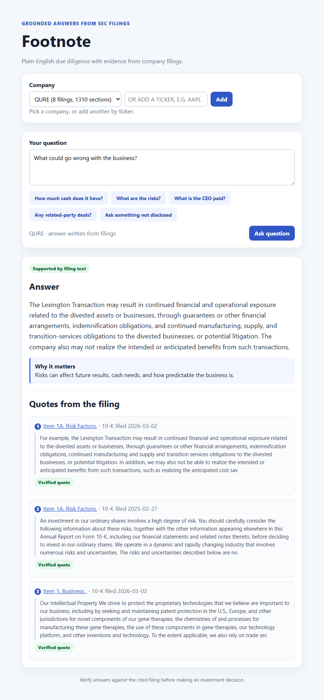

Footnote
Grounded Q&A over SEC EDGAR filings
You ask a plain-English question about a US public company, and it answers using only that company’s SEC filings. It pulls the filings from EDGAR on demand, chunks them so tables stay intact, and retrieves with a mix of keyword (BM25) and vector search. There’s no RAG framework under it; I wrote that part myself. Every answer links to the filing it came from, and each quote is checked against the source text before it’s shown. If the filings don’t cover the question, it says “not disclosed” instead of guessing. I built an eval set at the same time, and that’s what caught a problem: the thresholds I’d tuned for when to abstain on one company didn’t hold up on the next one.
